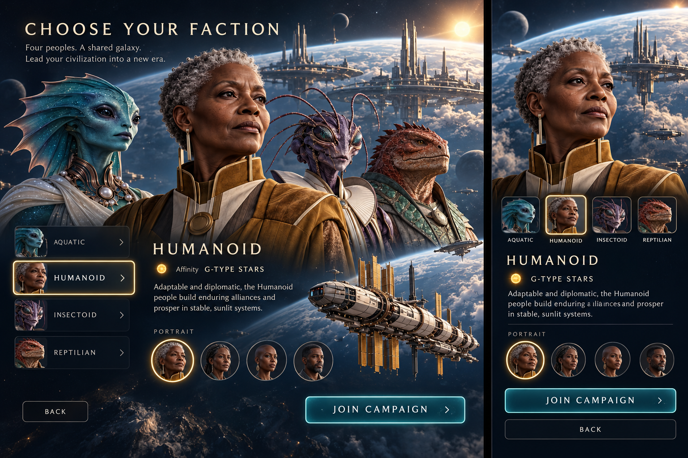
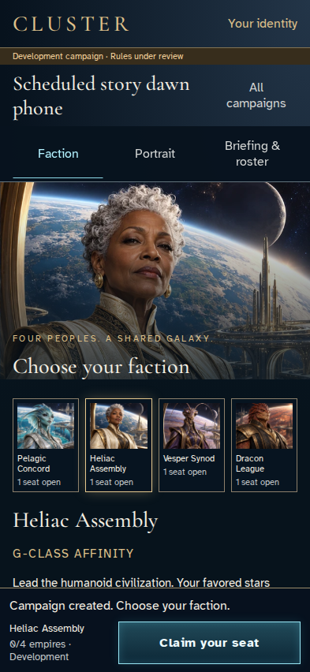
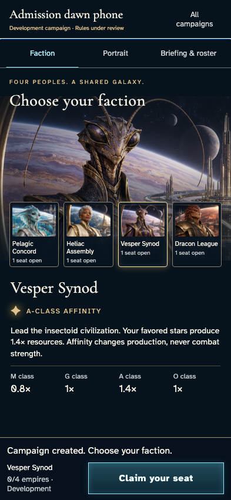
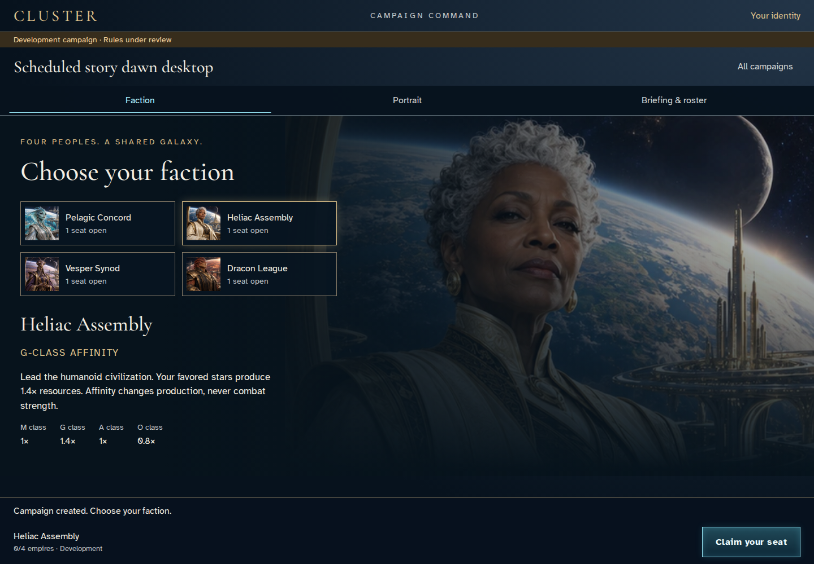
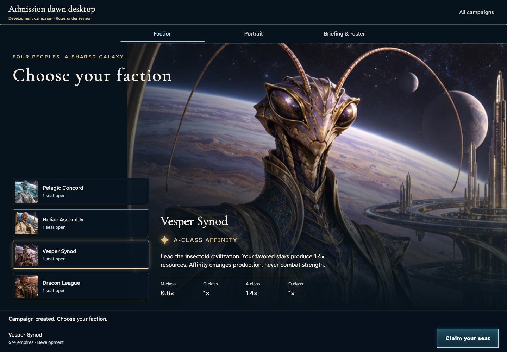
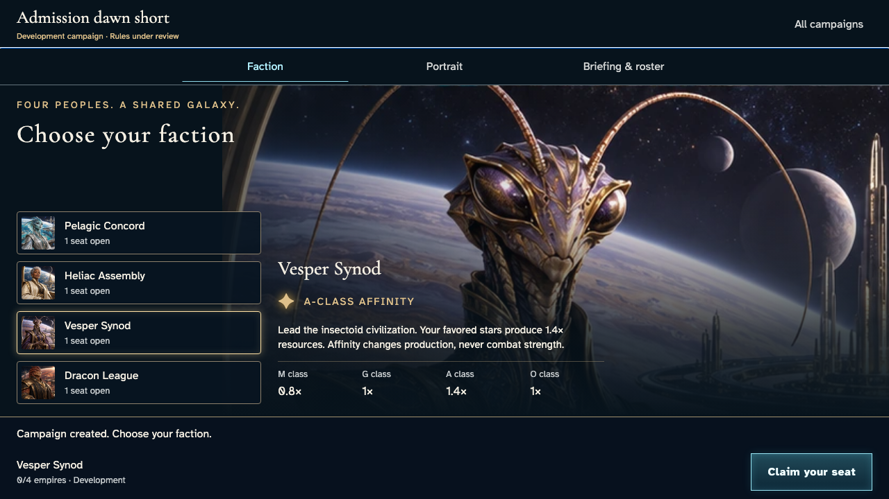

Review aid only. Original image bytes and proportions are unchanged. Current candidates require independent review; no baseline promotion.






Existing provenanced solo-envoy art does not reproduce every illustrative group/ship detail. No invented intelligence, rules or unavailable actions. See review record for exact scope and remaining gates.